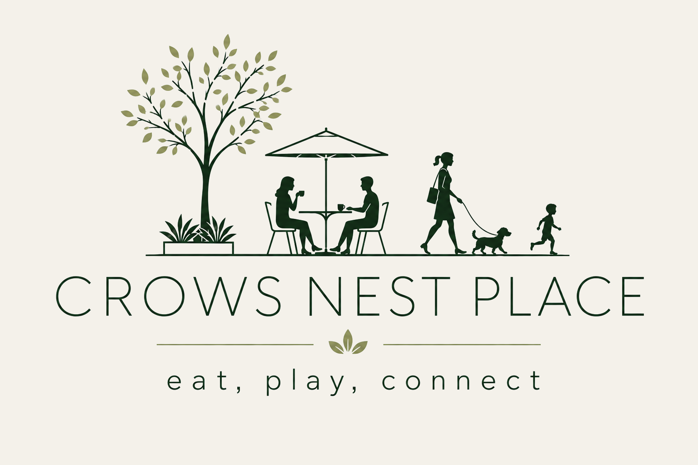

Crows Nest Place
eat, play, connect
Home
Pedestrians First
Why It Matters
Write to the Minister
FAQ
About
Contact
Sign the petition
About the campaign
Who is running the campaign?
A working group of Willoughby Road business owners and community representatives.
Business owners
Oscar Lenden,
Small Bar
Jake Tanous,
Plan B
Rob McNeill,
The Hayberry
Shonagh Botley,
Sho & Co
David Pike,
Mainly Mobiles
(Main Street Committee rep)
Community representatives
Sue Wadley
(local resident)
Denis Moore
(local resident)
John Hancox
(Chair, Wollstonecraft Precinct)
